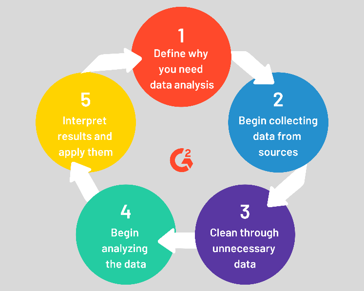

Ni Wayan Sumartini Saraswati
Desember, 2023
METODE PENGOLAHAN BIG DATA
Dalam melakukan pengolahan big data maka diperlukan proses data analytics, data science dan machine learning. Ketiga proses tersebut secara bersama-sama menghasilkan informasi dari big data. Berikut akan dibahas masing-masing definisi dari istilah tersebut.
DATA ANALYTICS
Data analytics adalah cabang ilmu yang mempelajari bagaimana mengolah data mentah menjadi informasi berharga yang dapat digunakan oleh pengambil keputusan dalam mengoptimalkan bisnisnya. Proses data analytics berjalan secara mekanis menggunakan query dan secara algoritmik menggunakan metode statistik dan machine learning.
Berikut adalah tahapan proses dari data analytics.
Mendefinisikan apa saja kebutuhan informasi adalah tahapan pertama dari data analytics. Berangkat dari kebutuhan informasi maka bisa ditentukan data apa yang diperlukan. Tahapan berikutnya adalah bagaimana mengumpulkan data dari sumber, dalam hal ini bisa jadi adalah big data. Proses berikutnya adalah pembersihan dan transformasi data. Tahapan ini merupakan tahapan menyesuaikan data sumber menjadi data input bagi tahapan selanjutnya. Tahapan selanjutnya adalah proses analisis data. Analisis data bisa menggunakan metode statistik maupun algoritma machine learning. Jika analisis data menggunakan metode machine learning maka kita mengenalnya sebagai konsep data science. Setelah analisis data selesai dilakukan maka visualisasi dan interpretasi hasil tersebut menyajikan informasi penting yang dibutuhkan pengambil keputusan. Proses bisa berulang jika dirasakan informasi tersebut belum menjawab kebutuhan informasi yang telah ditetapkan pada tahapan pertama dari proses big data analytics ini.

Proses Data analytics, Sumber (Devin Pickell, 2021)
Aplikasi data analytics melibatkan lebih dari sekadar pekerjaan menganalisis data. Khususnya pada proyek analitik tingkat lanjut, sebagian besar pekerjaan yang diperlukan dilakukan di awal, dalam mengumpulkan, mengintegrasikan, dan menyiapkan data dan kemudian mengembangkan, menguji, dan merevisi model analitik untuk memastikan bahwa mereka menghasilkan hasil yang akurat. Selain ilmuwan data dan analis data lainnya, tim analitik sering kali menyertakan insinyur data, yang tugasnya membantu menyiapkan kumpulan data untuk analisis (Data Analytics - Bestarion, n.d.).
Proses data analytics dapat dilakukan pada data cloud yang diproses dalam sebuah pipeline seperti yang digambarkan dalam gambar berikut. Proses utama terdiri dari pengambilan data (capture) yang dapat dapat melibatkan web scrapping dan web crawling serta pengambilan data eksternal database lainnya, preprocessing dan transformasi data, penyimpanan data dalam data lake dan data warehousing, analisis data dan penyajian data.

Data analytics Pipeline, Sumber : (Vergadia, 2020)
Descriptive analytics adalah proses penguraian data historis untuk lebih memahami perubahan yang terjadi dalam bisnis. Menggunakan berbagai data historis dan benchmarking, pengambil keputusan memperoleh pandangan holistik tentang kinerja dan tren yang menjadi dasar strategi bisnis (Jake Frankenfield, 2020).
Predictive analytics adalah cabang analitik lanjutan yang membuat prediksi tentang hasil masa depan menggunakan data historis yang dikombinasikan dengan pemodelan statistik, teknik data mining, dan machine learning. Perusahaan menggunakan predictive analytics untuk menemukan pola dalam data ini untuk mengidentifikasi risiko dan peluang di masa yang akan datang (Predictive Analytics | IBM, n.d.).
Prescriptive analytics adalah bentuk analitik lanjutan yang memeriksa data atau konten untuk menjawab pertanyaan “Apa yang harus dilakukan?” atau "Apa yang bisa kita lakukan untuk membuat _______ terjadi?", dan dicirikan oleh teknik seperti analisis grafik, simulasi, pemrosesan peristiwa kompleks, jaringan saraf, recommendation engines, heuristik, dan machine learning (Definition of Prescriptive Analytics - IT Glossary | Gartner, n.d.).
Beberapa software yang umum digunakan untuk data analytics antara lain : Pentaho, Tableau, Power BI, R studio dan Phyton.
DATA SCIENCE
Data science mengacu kepada pengolahan data menggunakan metode machine learning dan metode artificial intelligence lainnya. Seringkali istilah data science beririsan dengan istilah data mining. Data science memiliki ruang lingkup yang lebih luas daripada data mining. Data mining seringkali hanya mengacu pada satu informasi tujuan sedangkan data science mengacu kepada kebutuhan informasi oleh pengambil keputusan terhadap sebuah pengolahan data. Data science mencakup keseluruhan tahapan pengolahan data seperti business understanding, data mining, data cleaning, data exploration, feature engineering, predictive modeling, data visualization.

Data science Lifecycle, Sumber (Data Analytics - Bestarion, n.d.)
Konsep data science merupakan bagian dari data analytics dimana data science adalah bagian dari data analytics yang melibatkan penggunaan metode machine learning.
MACHINE LEARNING
Machine learning (pembelajaran mesin) adalah sebuah metode pengolahan data menggunakan algoritma dimana kemampuan mesin akan semakin meningkat berdasarkan pemrosesan terhadap data latih (sample). Machine learning merupakan pemrosesan data analytics yang mengotomatiskan pembuatan model analitis. Merupakan cabang dari artificial intelligence yang bertujuan bahwa sistem akan belajar dari data untuk mengenali pola dan membuat keputusan dengan intervensi sekecil mungkin.

Ruang lingkup machine learning, sumber (Dan Shewan, 2021)